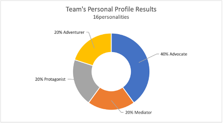
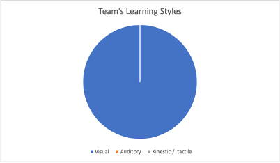

Individual Profiles
Team Profile
Myer-Briggs ’16personalities’ test
Our results are as shown in the doughnut graph. This was helpful to the success of our team because they helped team members be aware of each other’s strengths and weaknesses, allowing the best allocation of project tasks. You wouldn’t assign the job of presenting a project to someone whose weaknesses include self-isolating, nor would you assign the role of managing the project to someone who struggles to make tough decisions. We found that some of the profile traits matched some of our personalities and some didn’t. Though the profiles did provide a good jumping-off point for discussions within our team, we discovered what qualities each of us disagreed with and which traits we wanted to learn to push past and grow beyond. One team member, in particular, has proven that a profile test doesn’t define you. They have shown more strength and belief in their abilities than they have in the past. We believe that the team we have managed to bring together has helped that team member realise their potential. We have all learned from each other.
The 'Strengths' of these profiles were evident throughout our project and evidenced by the way we interacted during our meetings and within our online chats. Any of the "Weaknesses' listed did not interfere with the way our project progressed. We were all dedicated to making this a successful assignment.
| Personality type | Strengths | Weaknesses |
|---|---|---|
| Mediator | Empathetic, generous, open-minded, creative, passionate and idealistic | Unrealistic, self-isolating, unfocused, emotionally vulnerable, desperate to please, self-critical |
| Adventurer | Charming, Sensitive to others, Imaginative, Passionate, Curious, and Artistic | Fiercely Independent, Unpredictable, Easily Stressed, Overly Competitive and Fluctuating Self-Esteem. |
| Advocate | Creative, Insightful, Principled (in a good way), Passionate and Altruistic | Sensitive to Criticism, Reluctant to Open Up, Perfectionistic, Avoiding the Ordinary, Prone to Burnout |
| Protagonist | Tolerant, Reliable, Charismatic, Altruistic, Natural Leaders | Overly Idealistic, Too Selfless, Too Sensitive, Fluctuating Self-Esteem, Struggle to make tough decisions |
Three of our team members also fell within the same ‘Diplomats’ sub-section of the 16personalities test, which goes to show we attracted like-minded personalities into our team and this, we believe, allowed us to communicate clearly and feel supported and heard.

Learning Style Test
According to the various learning style tests completed by the team, our strongest attribute resulted in all of us being ‘Visual Learners.’ This was helpful to the success of our team because all of our teamwork was carried out visually either via online meetings or in writing; MS Teams chats, channel posts, videos, and our working documents. We were all able to access and view our Group Project Schedule/Gantt chart and the Task Planner when required.
Creative Types
According to mycreativetype.com, our team consists of two Thinkers, one Visionary, one Producer and a Dreamer. Being creative doesn’t always require a paint brush or clay to sculpt. Innovation, intuition and being able to think outside the box in business or when working within a team, is a form of creativity. The most successful inventions are born from creativity, a perfect example is the iPhone. Steve Jobs once said; “Creativity is just connecting things” and that’s what we managed to do during our project. We connected the right balance of personalities who connected not only because of a common goal (team project) but also on a level of respect and understanding. We worked very well together as a team and shared our creative ideas to make our project the best it could be by working to our strengths.
The 'Creative Strengths' and even the 'Untapped Potential' that make up these profiles presented themselves throughout this project. I think we learned a lot from one another and inspired each other to be as creative as we could be with each decision that we made during this whole process.
| Creative Strengths | Untapped Potential | Ideal Collaborator | The Types |
|---|---|---|---|
| Intellectual curiosity, ability to find and create meaning | Bridging theory and practice, applying ideas in real life | The Adventurer |
 The Thinker |
| Strong leadership skills, ability to make things happen | Balancing productivity with purpose | The Dreamer |
 The Producer |
| Connection to emotions and imagination, empathy and sensitivity | Using dreams to fuel real-world action | The Innovator |
 The Dreamer |
| Full of big ideas, ability to see potential and possibility everywhere | Using your visions to fuel consistent daily action | The Thinker |
 The Visionary |